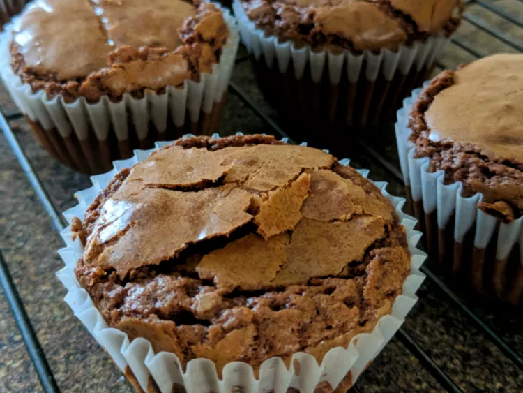

Brownies

Brownie de chocolate receta típica de mi abuelita
Brownie de chocolate. Hoy vamos a preparar una receta típica de mi abuelita, un brownie de chocolate. El brownie es un
bizcocho compacto y dulce de color marrón (de ahí su nombre de «brownie»). Hay muchos tipos de brownies ahora por la red
pero yo voy a preparar la receta americana, el brownie de chocolate con nueces.
Ingredientes:
- 5 Cucharadas de Cacao
- 90g de mantequilla
- 2 tazas de azucar
- 1 taza de harina
- 1 Cucharadaa de vainilla
- 4 huevos
- 70 ml de aceite capullo de ser posible
Pasos:
- Lavar las Frutas
- Cortar el platano y las fresas en pedacitos
- Hidratar el açaí con el agua o leche
- Agregar una cucharada de mantequilla de Mani
- Agregar avena
- Mezclar todo en licuadora.
- Agregar hielo.
- Servir en vaso